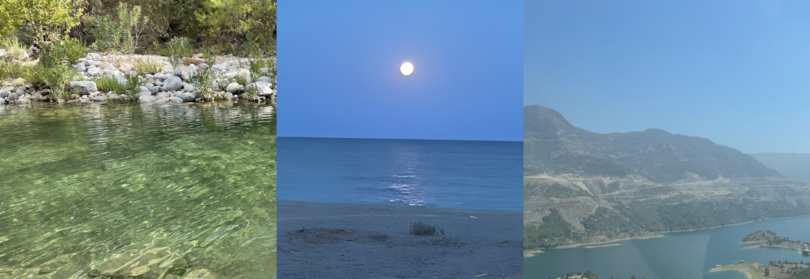

Are you interested in travelling to Turkey in the new year, but unsure of where to travel to within Turkey? If so, this blog article is for you! Along with amazing locations to travel to, I will also be providing information on the best time of year to travel to each of these areas.

1

Example

Example

Example
We're finishing this list off with a family favourite. Anamur is a quiet town on the southern coast of Turkey, roughly 4 hours from Antalya and 2 hours from Alanya. I've travelled here on many occasions while on vacation and it's beautiful. It is home to a decent amount of nightlife, and is home to a vast variety of beaches, clear rivers and is warm all throughout the summer. If you're interested in a calm beach holiday (and love the fact there are numerous cats here), this is the place for you. If you're interested in visiting Anamur, consider planning your trip at some point between May and August as the weather is ideal at this time of the year.
I hope you've found this blog post to be interesting, and I hope this will help you when it comes to planning a vacation in Turkey.